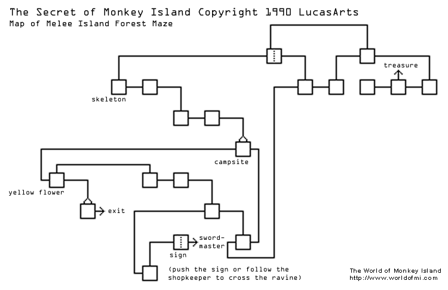
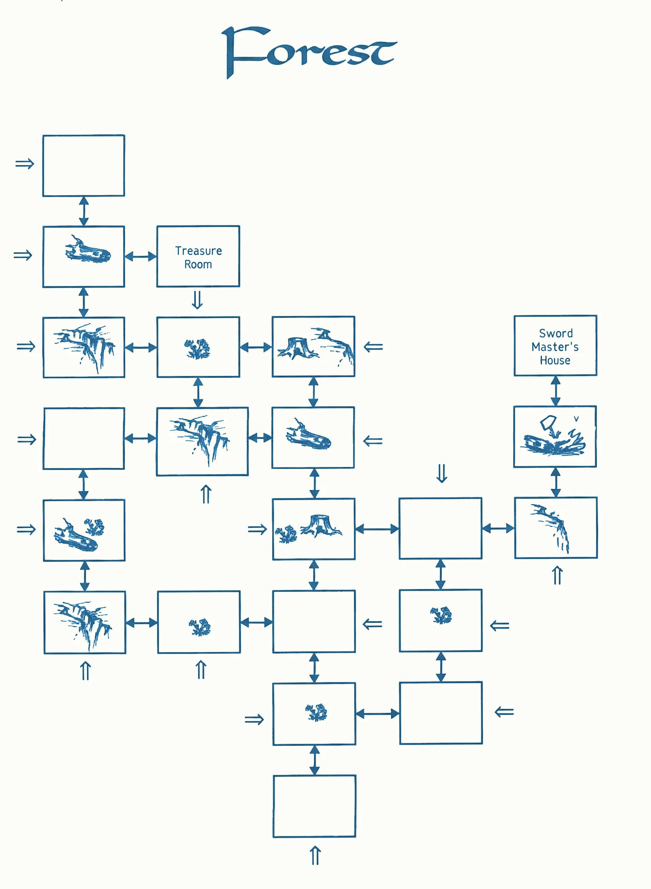
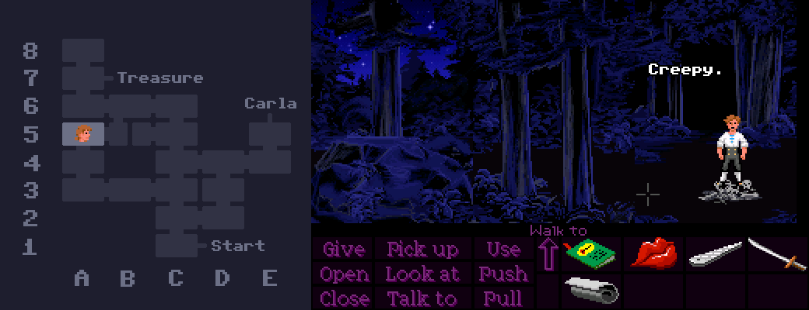
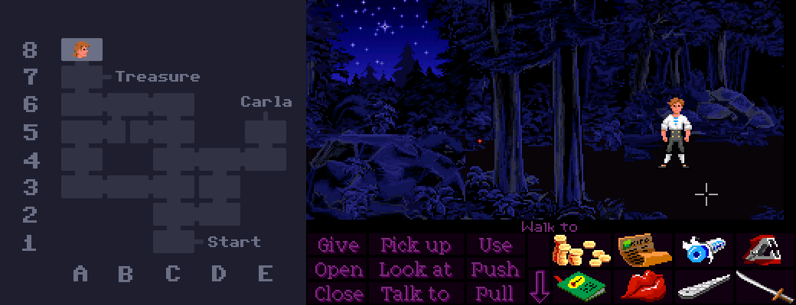
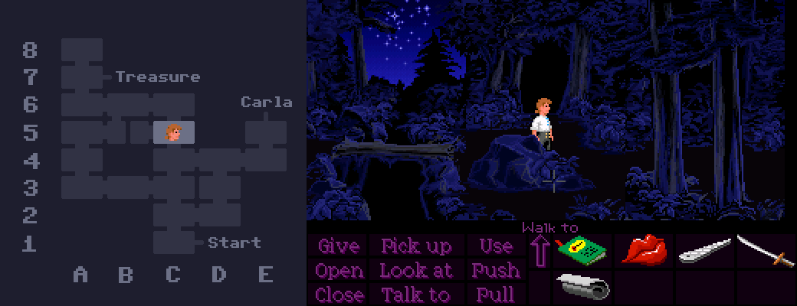
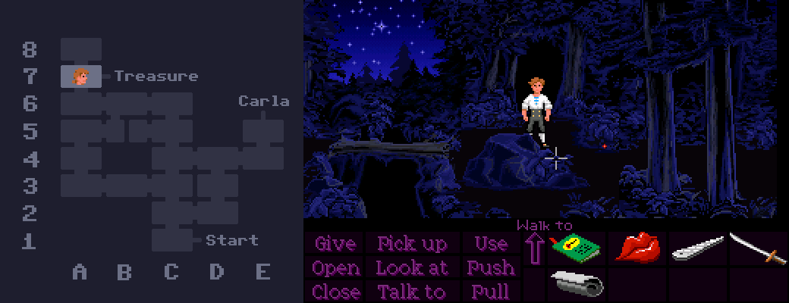
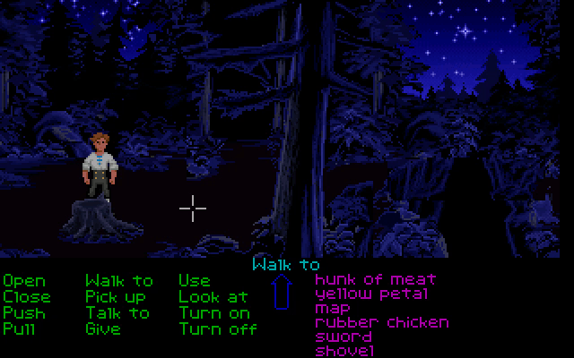
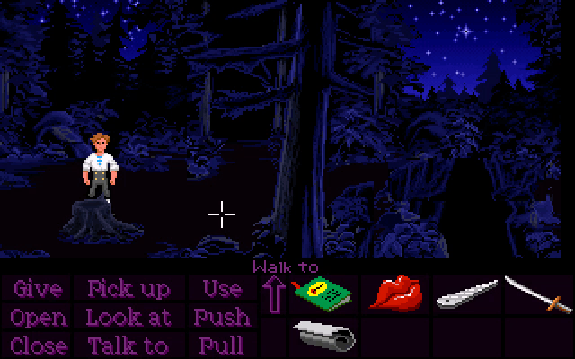
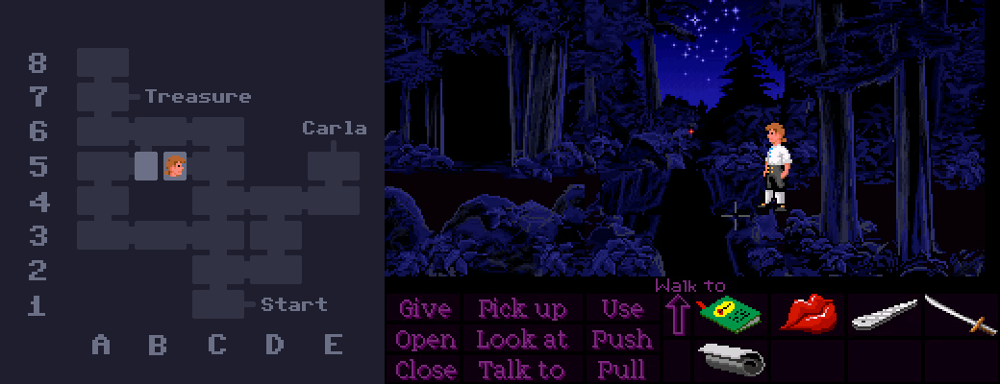
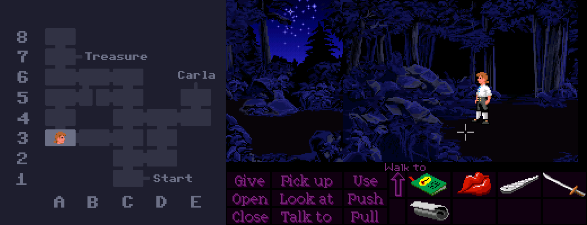

If you've ever gone looking for a full map of Mêlée Island's forest, there's a good chance you've come across this one, which has been floating around on the internet for a long time.

While it works for finding your way around, the layout certainly looks pretty confusing. It's a bit of a spaghetti mess with paths going all over the place and connections that don't seem to make any sense.
However, the layout is actually a lot more logical than this map would suggest.
If we assume the weird directions come from the camera angle changing, rather than the path itself, then the layout actually looks more like this!

Turns out it's a perfectly self-consistent grid! Considering how the forest can be so disorienting that people sometimes think it's randomly generated like the catacombs, I doubt anyone playing through the game normally would ever pick up on this. It's a pefect example of developers putting a lot of work into something that no one's going to notice.
By the way, I'll be using this coordinate system to make it easier to follow which rooms I'm talking about from now on. With that said let's look at some weird stuff in the forest!
In room A5, there's a mysterious pile of bones. It's not too difficult to find, but it's not on the path to either Carla's house or the treasure, which means you'll never see it unless you wander off the beaten track.

Interestingly, while skulls and corpses are a common sight on Monkey Island, I think this pile of bones is the only instance of human remains to be found anywhere on Mêlée.
When the Storekeeper is in the forest, he stays in one room at a time and waits for you to enter the same room before moving to the next one, regardless of whether you've gone off course or not in the meantime. This means if you decide to go the long way around, it's possible to go in a loop and come at the Storekeeper from the opposite direction! Nothing special happens, unfortunately - he just walks straight past Guybrush without a care in the world.
You can even make it happen twice - first in room D2 and then again in room D3.
The deepest location within the maze part of the forest is this unnasuming dead end in room A8. This is where you'll end up if you follow the directions to the treasure, but then take a wrong turn at the very end. The odds of someone stumbling upon it by wandering randomly are about equal to the odds of them finding the treasure randomly, and someone who is following the path is unlikely to veer off at the last second, too. For this reason, this dead end is almost certainly the least-visited room in the entire game.

The next time you're in Mêlée Island's forest, consider paying the lonely dead end a visit.
The path to the treasure takes you through two rooms (C5 and A7) that look almost identical. Both feature the exact same junction layout with a log bridge on the left, a large rock in the middle, and two trees on the right. The only difference is in the pattern of stars and trees in the background in the upper left. Because they look so similar, you get the sensation that the map is leading you in circles, which is probably intentional.


The color of the fireflies was changed between the floppy disk and CD versions of the game. The floppy version has bright yellow fireflies, while the CD version has red fireflies. This does appear to have been unintentional, but the technical explanation as to what went wrong is a little complicated.


The first thing we have to understand is that the fireflies use (or at least, are supposed to use) palette cycling! This is a technique used all over the game, and it's essentially a way of animating things by swapping out colors through code, instead of storing additional animation frames. Pay close attention to the yellow fireflies in the floppy version when they appear and disappear. For a split second, they turn into a single pixel (it's actually just the outer color being replaced with transparency), which creates the illusion of them "growing" and "shrinking" in and out of the darkness. You'll also notice that this effect is missing in the CD version - the fireflies simply pop in and out of existence. This is our first clue as to what's gone wrong.
Let's take a look at what the firefly's costume looks like internally:
Huh! It's red across all versions! This in itself isn't too weird. There are a few other instances of palette cycling where the "default" appearance internally uses strange colors (such as the dock sunset), but the game handles it by swapping in the correct colors at runtime. That's exactly what's happening here in the floppy version, but it somehow got broken in the CD version, so we're left seeing only the default red colors and no shrinking in and out.
The problem appears to come from the CD firefly's reds being ever-so-slightly brighter than those in the floppy firefly. Actors seem to have been universally brightened throughout the CD version, and this is a symptom of that. It's probably too subtle to see on the fireflies without opening them in an image editor, but the difference is more noticable on Guybrush.
Anyway, rather than brightening the same color palette slots that were already used (that's slots 5 and 13 from the left - the dark red and the peachy red), these new ever-so-slightly-brighter colors ended up in slots 2 and 3 near the beginning. I can only guess at why this happened, but it was probably caused by an automated workflow meddling with the palette, and the programmers either forgot or didn't notice that the numbers in the code were no longer pointing to the correct slots. This means that in the CD version, the game is still trying to cycle the colors correctly, but to no avail, since slots 5 and 13 are no longer in use.
I don't think I mind the red fireflies, personally. They look kinda cool in their own way, although it is a shame that the shrinking-and-growing effect got lost.
There are two different versions of the forest theme - the regular one for when you're on your own, and one for when you're following the Storekeeper. The regular version has an additional instrument, which isn't there in the Storekeeper version. It sounds like a flute or some kind of wind instrument in the background.
Personally, I kinda feel like these should be the other way around. The music should gain an extra instrument to represent the extra character.
If you open the map while standing on the right half of room B5, Guybrush will be teleported to the other side of the ravine when he puts it away.

The reason this happens is because of the logic that decides which half of the room should be "walkable" each time you enter. Whenever the room is loaded, the game checks the ID of the previously-loaded room. If it was room C5, then it makes the right half walkable, otherwise it makes the left half walkable.
The problem is that treasure map closeup is also considered its own "room", which means that when closing it and loading back into room B5, the "previous room" is now the map. And because the game is only checking whether the previous room was specifically C5, it assumes in this case that Guybrush must have come from room A5 or B6, and makes the left half walkable. The game then detects that Guybrush is outside of the valid walkable zone, so it teleports him across the ravine.
Rooms B5 and A3 both feature a ravine running down the middle, splitting them in half. But while both halves of room B5 can be reached from different places, the left side of A3 is completely inaccessable, despite appearing to have a path leading off the left side of the screen.
